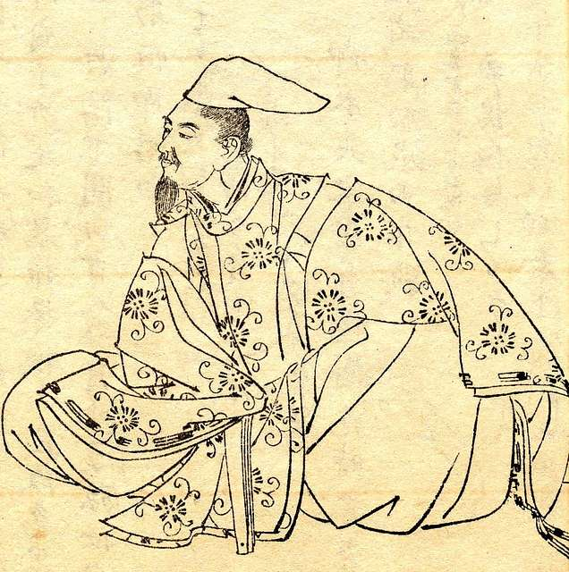
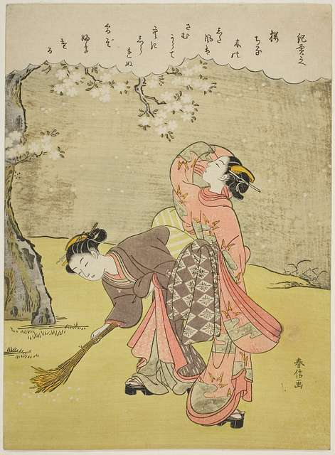

Tosa Nikki, Ki no Tsurayuki e la diaristica “femminile” in epoca Heian

Il Tosa Nikki, redatto da Ki no Tsurayuki nel 935, è un documento prezioso per comprendere la vita quotidiana, le credenze e l’organizzazione sociale del Giappone dell’epoca Heian. Sebbene formalmente sia un’opera letteraria, oggi viene spesso usato come fonte storica, soprattutto per la ricchezza di dettagli che offre su usi, costumi e percezione del tempo durante i viaggi ufficiali dei funzionari.
Attraverso il diario, si può osservare come i giapponesi dell’epoca scandivano i giorni non solo con il calendario, ma anche con pratiche rituali e religiose fortemente radicate nella cultura materiale e simbolica.
Il valore storico del Tosa Nikki
Il Tosa Nikki è una delle poche testimonianze coeve in grado di mostrarci cosa significasse concretamente viaggiare nel X secolo in Giappone. L’opera racconta il ritorno alla capitale di un ex governatore dopo tre anni in provincia, accompagnato da un seguito composto da servitori e familiari. Le annotazioni quotidiane ci offrono un’istantanea della vita di corte in trasferta: il rispetto dei riti stagionali, i cibi preparati per propiziare fortuna, le cerimonie mancanti e il disagio per non poterle celebrare.
Anche i comportamenti ripetitivi, come schioccare le dita per scacciare la sfortuna, o lanciare oggetti in mare durante le tempeste per placare le divinità, sono elementi che ci aiutano a ricostruire le credenze popolari e i rituali quotidiani.
Ciò che una donna poteva fare e un uomo no

Un elemento curioso ma importante è che Tsurayuki sceglie di narrare il diario fingendosi una donna. Questo espediente non serve solo a imitare uno stile, ma ci dice molto su come venivano percepiti i ruoli di genere. Gli uomini scrivevano in cinese classico, le donne in kana. Utilizzare il kana permetteva una maggiore libertà di espressione personale. Tsurayuki si appropria di questa modalità, mostrando indirettamente i limiti imposti dalla società anche nella scrittura e dando voce a una figura femminile che osserva, racconta e giudica ciò che accade nel viaggio. Infine, secondo alcuni, La voce femminile poteva essere vista come una critica all’appropriazione maschile della produzione culturale femminile e una riflessione sulle limitate opportunità per le donne di rivendicare la paternità dei propri lavori.
Disuguaglianza sociale – tra ceto e cultura
Il Tosa Nikki è una fonte utile anche per studiare la disuguaglianza tra classi sociali. La capitale era il centro della cultura e del potere, mentre le province erano considerate arretrate. I provinciali vengono spesso rappresentati nel diario come goffi o incapaci di comprendere le regole del comportamento e della poesia di corte. Questo mostra quanto fosse marcata la distanza tra l’élite e il resto della popolazione.
Cosa significa viaggiare nel Giappone del X secolo
Il viaggio narrato nel Tosa Nikki ci mostra le condizioni logistiche e materiali del tempo. Si viaggiava su piccole imbarcazioni lungo la costa, esposti alle intemperie, ai pirati e al rischio reale di perdere la vita. Il mare era percepito come luogo pericoloso, quasi mitico. Alcune pratiche, come gettare specchi in acqua per placare gli spiriti, testimoniano credenze molto diffuse. Il tempo atmosferico influenzava non solo il ritmo del viaggio, ma anche l’umore del gruppo.
Il tempo del viaggio veniva vissuto in modo diverso: lento e sospeso quando ci si trovava lontano da casa, accelerato e carico di speranza man mano che si avvicinava la capitale. La nostalgia per Kyōto era tangibile e l’arrivo era vissuto come un ritorno alla “normalità” e alla sicurezza.
La mappa proposta ha lo scopo di visualizzare il percorso compiuto da Ki no Tsurayuki durante il viaggio di ritorno dalla provincia di Tosa alla capitale. Le tappe sono state individuate in base alle descrizioni presenti nel testo. Le coordinate utilizzate non sono storicamente esatte, ma solo indicative e funzionali a una rappresentazione divulgativa.
Usi e costumi durante il viaggio
Durante il percorso, il gruppo celebrava feste tradizionali come il primo giorno dell’anno e il Giorno del Topo, adattando i rituali alle condizioni del viaggio. Si piantavano piccoli pini, si banchettava con cibi simbolici (come teste di cefali o sake aromatizzato), si praticavano piccoli riti di buon augurio.
Anche l’abbigliamento veniva adattato ai giorni propizi o infausti: in certi giorni si evitava di tagliarsi le unghie o indossare determinati colori. Questi dettagli ci danno informazioni concrete su come la religione, il calendario lunare e le superstizioni scandivano il quotidiano.
月やあらぬ 春や昔の 春ならぬ 我が身一つは もとの身にして
(“È forse cambiata la luna? È forse mutata la primavera d’un tempo? Solo io resto lo stesso…”)